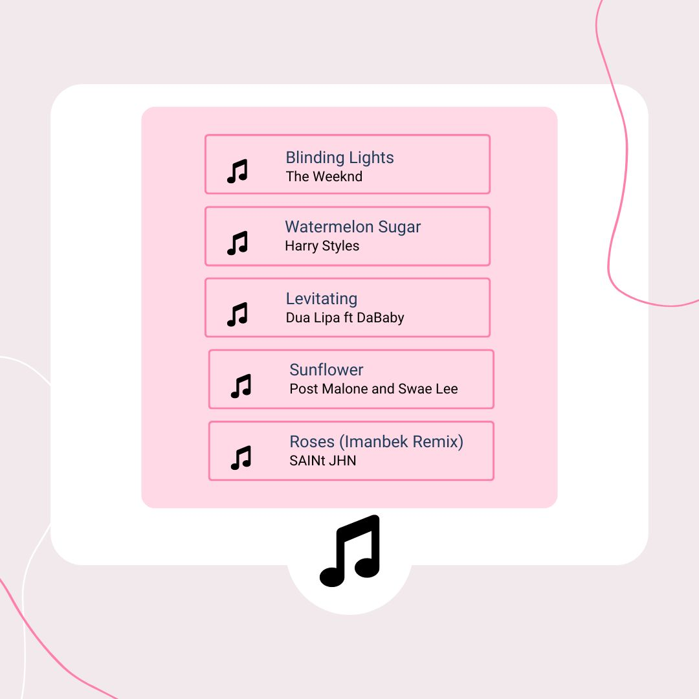

“This is the song of the Summer” is a phrase that many of us have heard yearly on the radio. But what makes a song, “the song of the Summer?”
There are certain songs that people hear and immediately get brought back to the season of warmth and sunshine. The tempo of a summer song usually must be “upbeat but chill according to Sarah Brindell, a songwriting professor at the Berklee College of Music. For many people, a summer song has to be one that they are able to relate to. For artists, this is something that they use to their advantage because things such as going out and feeling the sunshine is something anyone can do.
Another key element that is used in summer songs is the fact that lyrics are usually “nostalgic or anticipatory.” Artists do this by picking lyrics carefully and making sure that they give of a sense of celebration.
Out of my top 5 most listened to songs for 2023, the song that would fall under the category of a “Summer” song would be All You’rn by Tyler Childers.
The lyrics! The lyrics of this song, embody everything that Sarah Brindell mentioned. Below, some of the many lyrics are highlighted that give off the feeling of nostalgia and celebration that Brindell mentioned.
Take a look below!
The tempo!
The overall tempo of this song is a chill relaxing one! Right away, it is obvious that this is a love song. He uses soothing instruments such as a piano and guitar throughout the song and brings to life the elements of nostalgia and love that his lyrics portray!
Other songs that have popped up in my recommended that are considered “Summer Songs”:
These songs provide the exact level of energy that is needed to enjoy the Summer season to the fullest.
So next time you listen to a song, take a minute and analyze to see what season the artist meant for it to thrive in!